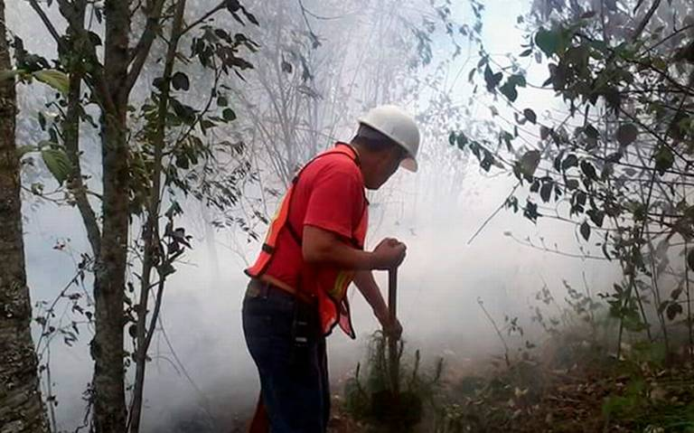
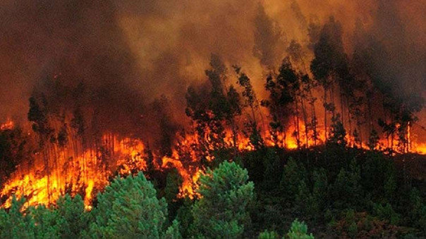
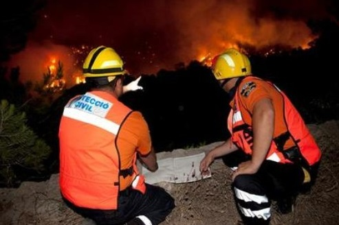
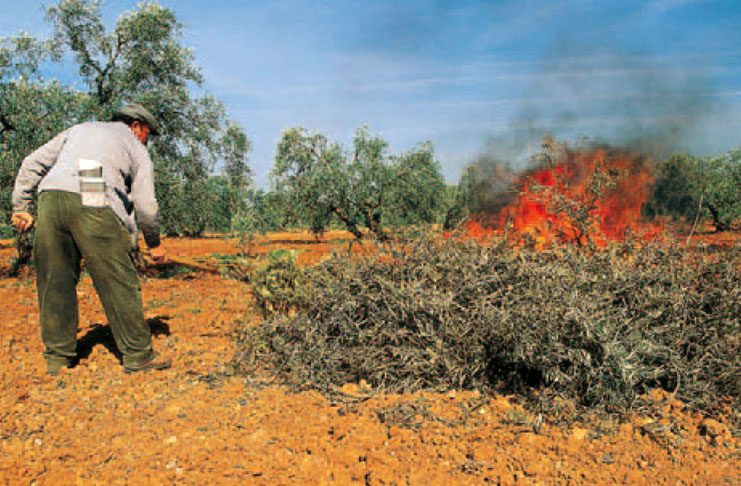

Por falta de humedad, suman 30 incendios en Teziutlán


Continúan presentándose incendios forestales en gran parte de esta región, sobre todo en los municipios de la parte alta y del altiplano, perteneciente a esta Sierra Nororiental, donde cerca de 30 de estos siniestros, han arrasado con una gran número de hectáreas de bosque y pastizales, sobre todo ante la escasa humedad que prevalece en dichos sitios, a diferencia de lo que se vive en otros municipios de esta zona, donde ante la presencia de algunas lloviznas, ha impedido el desarrollo de los mismos.

Lo anterior, fue confirmado por René Meza González, delegado de Protección Civil en esta región, que comprende 20 municipios, desde San José Acateno-Tenampulco, hasta Oriental-San José Chiapa, en algunos de ellos, donde en lo que va del año, se han registrado un gran número de incendios, en su mayoría ocasionados por la misma gente que lanza algún objeto al pasto, para sacar el renuevo para sus animales o que bien quieren leña o madera, aprovechan para incendiar cierta zona.

En este sentido, señaló que todos los incendios que se han detectado, ha sido provocados, algunos de ellos originados de manera mecánica, es decir, que por algún corto en líneas de conducción de energía eléctrica, se dé un chispazo, con el cual se puedan emprender un siniestro, sin embargo, la mayoría son provocados por los campesinos. Al respecto, auguró que se espera una temporada fuerte en cuanto a temperaturas, lo que ocasionará que este tipo de siniestros se sigan presentando también con mayor intensidad, motivo por el que pidió precaución a la población para evitar la proliferación de estos; así mismo, solicitó cuidar la salud de las personas, para evitar los denominados golpes de calor.